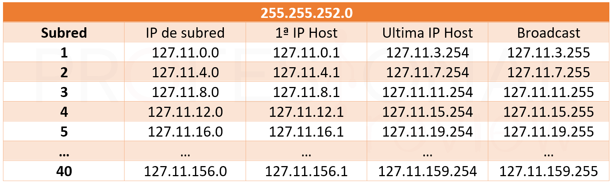
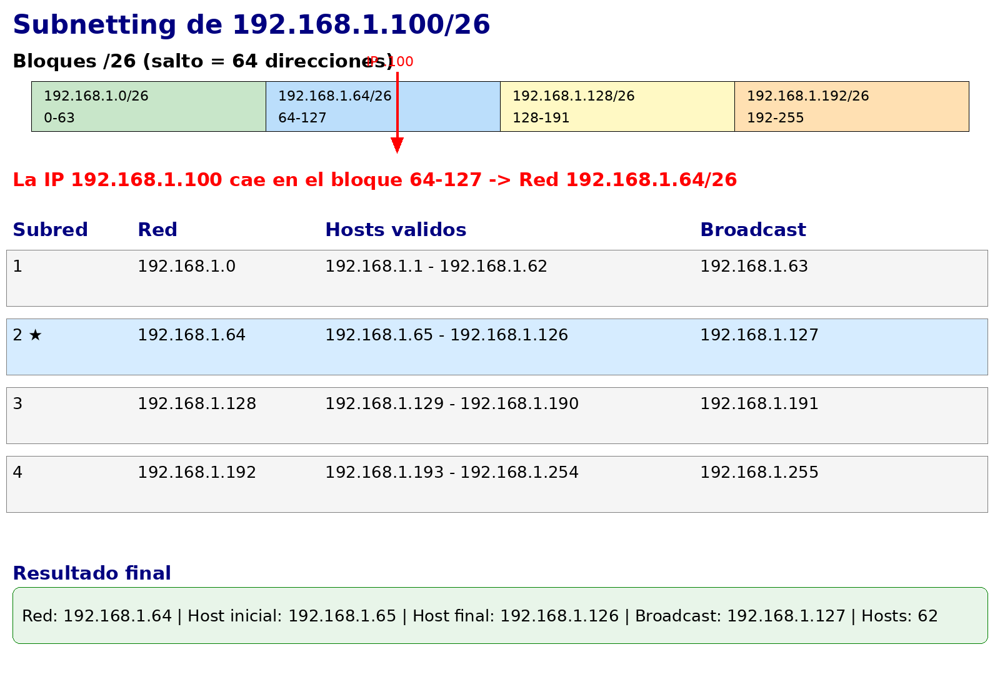
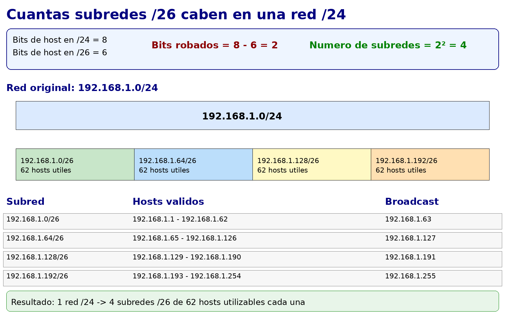

Cálculo de subredes
Ya sabemos qué es una máscara de subred y cómo elegirla según el número de equipos. Ahora vamos a aprender a calcular todos los parámetros de una subred a partir de una dirección IP y su máscara: la dirección de red, el rango de hosts válidos, la dirección de broadcast y el número de hosts utilizables.
Este es el cálculo que haremos constantemente al diseñar redes: cuando asignamos la red 192.168.10.0/26 a un departamento, necesitamos saber exactamente qué IPs podemos asignar a los equipos, cuál es la dirección de broadcast y cuántos equipos caben como máximo.
Los cuatro valores fundamentales de una subred
Para cualquier subred, necesitamos calcular cuatro valores:
1. Dirección de red: la primera dirección del bloque. Todos los bits de host a 0. No se puede asignar a ningún dispositivo — identifica la red en sí.
2. Primera dirección de host: la dirección de red + 1. El primer dispositivo que podemos configurar.
3. Última dirección de host: la dirección de broadcast - 1. El último dispositivo que podemos configurar.
4. Dirección de broadcast: la última dirección del bloque. Todos los bits de host a 1. No se puede asignar a ningún dispositivo — se usa para enviar mensajes a todos los equipos de la red simultáneamente.


Método de cálculo paso a paso
El método más claro para calcular una subred es trabajar con el tamaño del bloque, que es simplemente el número total de direcciones del bloque (2ⁿ, donde n son los bits de host).
Paso 1: Calcular el tamaño del bloque
El tamaño del bloque = 2^(bits de host) = 2^(32 - prefijo CIDR)
- Para /24: bits de host = 32 - 24 = 8 → tamaño = 2⁸ = 256 direcciones
- Para /26: bits de host = 32 - 26 = 6 → tamaño = 2⁶ = 64 direcciones
- Para /28: bits de host = 32 - 28 = 4 → tamaño = 2⁴ = 16 direcciones
Paso 2: Encontrar la dirección de red
La dirección de red es el inicio del bloque. Los bits de host son todos 0.
Para encontrarla rápidamente: el octeto donde cambia la máscara es el clave. La dirección de red en ese octeto es el múltiplo del tamaño de bloque más cercano por debajo de la IP dada.
Paso 3: Calcular el broadcast
Broadcast = dirección de red + tamaño del bloque - 1
Paso 4: Rango de hosts
- Primera IP de host = dirección de red + 1
- Última IP de host = broadcast - 1
- Número de hosts = tamaño del bloque - 2
Ejemplos resueltos
Ejemplo 1: 192.168.1.100/24
Paso 1: Tamaño del bloque = 2^(32-24) = 2⁸ = 256
Paso 2: La máscara /24 afecta al cuarto octeto completamente. La dirección de red es 192.168.1.0 (todos los bits del cuarto octeto a 0).
Paso 3: Broadcast = 192.168.1.0 + 256 - 1 = 192.168.1.255
Paso 4:
Dirección de red: 192.168.1.0
Primera IP de host: 192.168.1.1
Última IP de host: 192.168.1.254
Broadcast: 192.168.1.255
Hosts utilizables: 254
Ejemplo 2: 192.168.1.100/26
Paso 1: Tamaño del bloque = 2^(32-26) = 2⁶ = 64
Paso 2: La máscara /26 actúa sobre el cuarto octeto. Los bloques de 64 en el cuarto octeto empiezan en: 0, 64, 128, 192...
La IP es 192.168.1.100 → el 100 está entre 64 y 128 → el bloque empieza en 64.
Dirección de red: 192.168.1.64
Paso 3: Broadcast = 192.168.1.64 + 64 - 1 = 192.168.1.127
Paso 4:
Dirección de red: 192.168.1.64
Primera IP de host: 192.168.1.65
Última IP de host: 192.168.1.126
Broadcast: 192.168.1.127
Hosts utilizables: 62


Ejemplo 3: 172.16.5.200/25
Paso 1: Tamaño del bloque = 2^(32-25) = 2⁷ = 128
Paso 2: Bloques de 128 en el cuarto octeto: 0, 128...
La IP es 172.16.5.200 → el 200 está entre 128 y 256 → el bloque empieza en 128.
Dirección de red: 172.16.5.128
Paso 3: Broadcast = 172.16.5.128 + 128 - 1 = 172.16.5.255
Paso 4:
Dirección de red: 172.16.5.128
Primera IP de host: 172.16.5.129
Última IP de host: 172.16.5.254
Broadcast: 172.16.5.255
Hosts utilizables: 126
Ejemplo 4: 10.0.50.130/23 (máscara en el tercer octeto)
Cuando la máscara no cae en un límite de octeto "limpio" como /8, /16, /24, el cálculo requiere prestar atención al octeto correcto.
Paso 1: Tamaño del bloque = 2^(32-23) = 2⁹ = 512
Con 512 direcciones y siendo el cuarto octeto de 256, el bloque se extiende por dos octetos completos del cuarto, lo que significa que el bloque actúa sobre el tercer octeto (en pasos de 2).
Paso 2: Bloques de 2 en el tercer octeto: 0, 2, 4, ..., 50, 52...
La IP es 10.0.50.130 → el tercer octeto es 50, que es múltiplo de 2 → el bloque empieza en el tercer octeto = 50.
Dirección de red: 10.0.50.0
Paso 3: Broadcast = 10.0.50.0 + 512 - 1:
- El bloque de 512 abarca 10.0.50.0 hasta 10.0.51.255
- Broadcast: 10.0.51.255
Paso 4:
Dirección de red: 10.0.50.0
Primera IP de host: 10.0.50.1
Última IP de host: 10.0.51.254
Broadcast: 10.0.51.255
Hosts utilizables: 510
Truco para /23, /22, /21...
Cuando la máscara actúa sobre el tercer octeto, el tamaño del bloque en ese octeto es: - /23 → bloques de 2 en el tercer octeto (512 IPs en total) - /22 → bloques de 4 en el tercer octeto (1024 IPs en total) - /21 → bloques de 8 en el tercer octeto (2048 IPs en total)
La dirección de red siempre es el múltiplo del tamaño de bloque más cercano por debajo del valor del octeto.
Cuántas subredes caben en una red mayor
Otro cálculo habitual es determinar cuántas subredes de un tamaño determinado caben dentro de una red mayor. La fórmula es sencilla:
Número de subredes = 2^(bits de subred añadidos)
Si partimos de una red /24 y la dividimos en subredes /26:
- Bits de host originales: 8 (para /24)
- Bits de host en la subred: 6 (para /26)
- Bits "robados" para hacer subredes: 8 - 6 = 2
- Número de subredes: 2² = 4 subredes /26


Ejemplo: dividir 192.168.1.0/24 en subredes /26
4 subredes × 62 hosts = 248 hosts utilizables (vs 254 con una sola /24). El pequeño "coste" de hacer subredes es perder 6 direcciones (4 de red + 4 de broadcast - 2 originales).Ejercicios de cálculo
Ejercicio A
Calcula todos los parámetros de las siguientes subredes:
192.168.5.75/2710.10.10.10/8172.16.100.200/20192.168.1.50/30
Solución
1. 192.168.5.75/27
- Tamaño bloque: 2^(32-27) = 2⁵ = 32
- Bloques de 32 en el 4º octeto: 0, 32, 64, 96... → 75 está entre 64 y 96 → empieza en 64
2. 10.10.10.10/8
- Tamaño bloque: 2^(32-8) = 2²⁴ = 16.777.216
- La máscara /8 actúa sobre el primer octeto. Dirección de red: 10.0.0.0
3. 172.16.100.200/20
- Tamaño bloque: 2^(32-20) = 2¹² = 4096
- Con 4096 IPs, el bloque actúa sobre el tercer octeto en pasos de 16 (4096 / 256 = 16)
- Bloques de 16 en el 3º octeto: 0, 16, 32, ..., 96, 112... → 100 está entre 96 y 112 → empieza en 96
4. 192.168.1.50/30
- Tamaño bloque: 2^(32-30) = 2² = 4
- Bloques de 4 en el 4º octeto: 0, 4, 8, ..., 48, 52... → 50 está entre 48 y 52 → empieza en 48 Esta es una subred /30 típica para un enlace punto a punto entre dos routers.
Ejercicio B
La empresa TechSolutions S.L. tiene asignada la red 192.168.50.0/24. Necesita dividirla en subredes para sus departamentos:
- Desarrollo: 40 equipos
- Administración: 15 equipos
- Dirección: 5 equipos
-
Servidores: 8 equipos
-
¿Qué máscara usarías para cada departamento?
- ¿Cabrían todas las subredes dentro de la red
192.168.50.0/24? - Asigna una subred concreta a cada departamento sin solapamiento.
Solución
1. Máscara por departamento:
- Desarrollo (40 eq. + margen) → ~50 hosts → /26 (62 hosts) ✓
- Administración (15 eq. + margen) → ~20 hosts → /27 (30 hosts) ✓
- Dirección (5 eq. + margen) → ~8 hosts → /28 (14 hosts) ✓
- Servidores (8 eq. + margen) → ~10 hosts → /28 (14 hosts) ✓
2. ¿Caben en /24?
- Desarrollo /26: 64 direcciones
- Administración /27: 32 direcciones
- Dirección /28: 16 direcciones
- Servidores /28: 16 direcciones
- Total: 64 + 32 + 16 + 16 = 128 direcciones de las 256 disponibles en /24 ✓
3. Asignación sin solapamiento:
Desarrollo: 192.168.50.0/26 hosts: .1 - .62 broadcast: .63
Administración: 192.168.50.64/27 hosts: .65 - .94 broadcast: .95
Dirección: 192.168.50.96/28 hosts: .97 - .110 broadcast: .111
Servidores: 192.168.50.112/28 hosts: .113 - .126 broadcast: .127
Libre: 192.168.50.128 - 192.168.50.255 (128 dir. para futuras subredes)